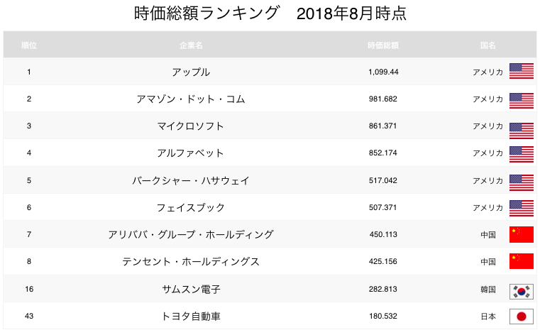

-
百度 Baidu
阿里巴巴 Alibaba
腾讯 Tencent
Guest
mihiro -
はじめに
こんにちは。本日は第２回ペフトーク「GAFA」に続きまして中国のネット社会にまつわるお話をします。今回は前回の米国に続き、超テック大国として台頭してきた中国の現状を取り上げさせて頂きます。この２国の現状を知ることは日本の未来を考える事にも繋がると思っています。
中国基本情報まず今に至る歴史から。現在、中国は世界的にみてGDPはアメリカに次いで２位ですが、大変な地域格差があります。今は北京市、江蘇省、広東省、上海市、福建省、広東省という６つの地区がめちゃくちゃに稼いで、残りの25区を支えている（年間82兆の赤字を110兆援助）状態です。これは共産主義との大きな矛盾になりますが、理由があります。中国という国は「社会主義（共産党一党独裁体制）＋資本主義」という独特のシステムで動いています。
中華人民共和国の最初の指導者、毛沢東（1893〜1976）は、ロシアの農村や労働者階級による革命の影響から資本主義の上をいく考え方として社会主義を取り入れます。その後、鄧小平（1904〜1977）の時代に「先富論」という“豊かになれる地域からどんどん豊かになればいい”という方針になり、資本主義を取り入れた政策が始まりました。ここから東海岸の北京、天津や経済特区とされたエリアに実験的に海外資本の投資実験がどんどん始まり、極度に成長するようになります。また世界に対して安い労働力を提供し「世界の工場」とも言われ始めます。これがロシアに比べ経済的に大きく発展した一大要因になります。
国旗からもその理念が読み取れます。大きな星は共産党を指し、小さな星は、労働者・農民・知識階級・愛国的小資本家（もしくは、満州族、モンゴル族、トルコ系ウイグル族、チベット族）を表しています。中国がファシズム的とも取れるのはこういう僕たちと全然違う国家システムが入っているからです。
こうして海外の資本を入れていく中で海外の技術やノウハウは国の吸収するところとなり、2000年代初頭～現在、皆さんもご存知のように中国の発展地区は一気にネット大国に発展する流れになります。しかしその発展の裏では農村部の貧困、搾取、チベット問題、ウイグル人への民族浄化など多くの問題もあり、一概に中国全土が発展しているとは捉えない見方が必要です。
-
現在中国には我々日本人にはインフラと化しているGoogle、twitter、LINE、Facebook、Instagram、YouTube、Spotify、Apple Musicなどの米国のネットサービスは全て規制されています。しかし、それらに相当するものは全て存在しており、かつ機能はそれらを上回ってるという現状です。特に物の売買や決済の機能において優れており、経済活動に大きな変革をもたらしています。
海外のネットサービスを規制している理由は何でしょうか。それは前述の中国共産党一党独裁、という国家システムにより、それらはブロックすべきもの、としているからです。また中国の検閲システムは、政府にとって都合の悪い情報を閲覧できないようにするために存在し、このシステムは「グレート・ファイアウォール」と呼ばれています。そういう外部のブロックと内部の統制があるのですが、これには中国という国が過去に何度も内乱と外敵による侵略で転覆してきた歴史も影響しているのだと考えられます。
中国の歴史を知る人はGoogleなど米国企業が入り込んできた時「これは第二のアヘン戦争だ」と抵抗しました。国の繁栄と国民の幸せのためには、国内統制と外来の巨大サービスのブロックが必要という考えが深く根付いています。これから紹介する企業も、国有ではありませんが我々が知る民間企業でもありません。中国のそこそこの企業には、ほぼ共産党員が介入していますし、最終的な落とし所は、国民の経済活動を活性化させ、国を繁栄させる、というものです。そこが日本の民間企業と感覚が違うところなので理解しておく必要があります。では、その代表的な企業を見てきましょう。
-
BAT（バイドゥ、アリババ、テンセント）
今、中国を代表する巨大テクノロジー企業BATを紹介します。BATとは、Baidu（バイドゥ）、Alibaba（アリババ）、Tencent（テンセント）の現在中国を代表する企業の頭文字からとった言葉です。時価総額ランキングでは、米国GAFAに迫る勢いです。日本の１位のトヨタですが42位という状況です。
 -
●百度（バイドゥ）
バイドゥとは1999年創業の中国最大の検索エンジンを提供する企業です。中国版Googleとも言われています。紹介動画があるので見てみましょう。
バイドゥに関して概要はつかめたでしょうか？この動画を見ていただければ一見順調そうに成長してきたと思われるかもしれないですが、バイドゥは幾度となく問題に直面してきた企業でもあります。中国国内ではバイドゥは中国政府のいいなり、手先のイメージが少なからずあります。そのイメージとなったのは、まず一つ目に中国政府の都合の悪い情報、天安門事件、チベット独立に関するワードを検索しようとすると「法律や政策に合致しない恐れがあるため、検索結果を表示できません。」と表示され、ユーザーがバイドゥは政府の言いなりの企業だという印象がついてしまいました。次に決定打となったのは、「毒粉ミルク事件」での騒動です。この事件は2008年にサンルー（三鹿）が製造した粉ミルクに化学物質メラミンが混入されていることが見つかり、新生児に多くの健康被害者が出ました。バイドゥはこの粉ミルクを製造していたサンルーから300万中国元を受け取り、悪い検索結果が出ないよう操作したというニュースで明るみとなり、大きな打撃を受けることとなりました。
-
●百度（バイドゥ）
このような問題を抱え、バイドゥは検索（広告収入）からの脱却を図りAI事業（自動運転・AIスピーカー）事業に集中し始めます。AI事業に関する動画も見て頂きましょう。自動運転のApollo、音声認識技術のDuerOSも注目です。
-
●Alibaba（アリババ）
では次にアリババを紹介します。中国版amazonと言われたりしていますが、多くの事業を手掛けています。まずは決済機能「Alipay（アリペイ）」に関する動画を見てみましょう。クレジットのような済機能以外にも実は色々な機能がありますよ、というのが分かります。
どうでしょうか？このように店舗検索、資産運用（Alipayの年利は4％）とも結びついている事が分かると思います。しかし、なぜ現金、カード支払いよりもこれほど利用されるに至ったのでしょうか。現金支払いが好まれる日本と比較してみましょう。日本は現金を持ち歩いていても治安が良いので盗まれることがない、町中に点在するコンビニのATMでお金を引き下ろせる環境が現金主義をとどまらせているかもしれません。中国ではどうでしょうか。中国は国土も広いので町中にATMを設置するとなると時間も労力もかかります。ましてや人口分の現金を用意するとなるとかなりのコストがかかります。またカード加盟店手数料率は2〜5%である一方、Alipayの決済手数料は、わずか０.6%となっています。この低い手数料を支払うだけでAlipayを利用でき、現金を用意するコストを省ける実態があります。こういった背景から中国で電子決済が一気に広まりました。また新規ユーザー獲得の為に大型のキャッシュバックキャンペーンを行い一気に利用者を獲得しました。
-
●Alibaba（アリババ）
では、次はアリババが出資している生鮮食品スーパー「盒马（フーマ―）」をご紹介します。
前回のトークでAmazon Goの説明をしましたが、全てオンライン化されているAmazon Goと違い、盒马はまだ人力のところはありますが、非常におもしろい店舗展開を見せています。アリババは今後「家庭から冷蔵庫をなくす」ことをテーマに、いつでも新鮮で安全な食材を手に入れる環境を作っていくと宣言しています。では、関連してアリババのスマートレストランの様子も見てみましょう。
-
●Alibaba（アリババ）
アリババの根幹を成すショッピングサイトの部分を見ていきましょう。アリババの代表的なECサイトには「淘宝（タオバオ）」と「天猫（Tmall）」があります。
淘宝（タオバオ）は2003年にサービス開始。一般消費者が出品する個人間取引（C2C）のショッピングサイト決済には電子マネーのアリペイが用いられ、チャットによる値引き交渉や問い合わせができます。Yahooオークションやメルカリのようなショッピングサイトとも言えるかもしれません。“淘宝（タオバオ）”の意味は、“見つからない宝物はない、売れない宝物はない”です。
天猫（Tmall）は淘宝（タオバオ）の一部を独立させたもので、2012年に誕生しました。現在では、中国最大の企業と個人の取引（BtoC） オンラインショッピングモールであり、高品質で高付加価値のブランド商品を中心に信頼ある（本物を取り扱う）オンラインショップとしての地位を確固たるものと認識されています。日本で言えば、楽天に近くて、淘宝（タオバオ）よりも元がしっかりしている所と分かる会社が登録されています。
-
・独身の日
あと、最近のニュースでも取り上げられていましたが、中国には、11月11日、年に1番物が売れるという「独身の日（双11／ダブルイレブン）」というものがあります。これは、恋人のいない人たちは買い物でもして気を晴らそうというものから始まりましたが、年々取引量は増え今年は１日の取引額が2135億元3.5兆円物流量は10億4200万件に達して過去最高を更新しました。これは楽天の１年の取扱高を上回る取引が行われた計算になります。また１日で荷物10億個、とヤマト運輸の年間物量を超えるものとなりました。
-
●テンセント
テンセントは創業1998年の中国の大手IT・ネットサービス企業です。「WeChat（ウィーチャット）」と呼ばれるメッセンジャーアプリ、日本のLINEに当たるものを軸に、幅広くサービスを展開しています。先ほどのAlipayのような支払い機能「Wechat Pay」、メッセンジャーアプリ「QQ」、ゲーム、ニュース、ビデオ、音楽配信とさまざまなプラットフォームを構築しています。売り上げの70％がゲーム事業となっています。ただここ最近、テンセントは大きく株を落としています。子供が親のクレジットカードを使ってゲームに大金をつぎ込んだ、ゲームのやり過ぎを咎められた子どもが怒って親に暴力をふるった、40時間連続で遊び続けて意識不明になって救急搬送された、などの事件があり政府がゲームの規制に入るなど株価を落とす原因となっています。
「WeChat」は中国版LINEともいわれています。LINEとの違いは、Facebookをされている方は想像しやすいと思いますが、Facebookと同様にWeChatにはモーメンツ機能というものがあり、その中に朋友圏（パンヨウチュエン）という機能があります。そこにアクセスすると、自分が登録している友人たちがアップした写真付きのコメントを見ることができます。家族の写真や日常の写真をアップしたりとプライベートな空間でもあります。
-
●テンセント
お店とも連動していてキャンペーン情報も来ます。この動画のように病院の予約ができるのもいいですね。知り合いからは「ここに行って良かったよ」とか「そのお店のクーポンだよ」という感じでモーメントにも毎日沢山の情報が来て、とにかく広まっています。ここでも国の規制が入った情報ではなく、口コミの情報という点に信頼性を置いている国民性が現れています。
-
この後、紹介した内容として
中国SNSについて
Weibo（ウェイボー）の紹介中国のストリーミング・サービスの現状
NEXT BAT「TMD」
今日頭条（Toutiao トウティアオ）：ニュースアプリ
美団点評（Meituan-Dianping メイチュアン・ディアンピン）：口コミサイト
Didi（ディディ）: タクシー配車プラットフォームその他、日本との国民性の違い、注目のアーティストや観光スポットなどの話をしました。
-
まとめ
最近、日本人を「インダストリー（製造）型」とすれば、中国人は「トレード（取引）型」と紹介している本を読んで腑に落ちました。僕たちは物を売ろうとすると、味や品質サービスを向上しようと考える。でも中国の人たちは発想が違って「これをここに持っていけば1.2倍で売れる」とか「このサイトにこう載せればマージンがいくら取れる」という中抜き商売の発想で経済を回していく。だから物やサービス自体が良くならないんですけども。
中国のネット人口は2007年まで2億人でしたが、この10年で7.7億と5億人以上も増えて一気にネット大国になりました。この目覚ましい成長には、①過去、国の規制で正しい情報が入るインフラがなかった事、②個人の発する情報が目新しさと信頼と楽しさをもって迎え入れられたという事、そして③このトレード型の国民性がSNSにフィットした事が考えられます。KOLと呼ばれるインフルエンサー・マーケティングがヒットするのもここに理由がありそうです。
そして、ここまで見てきて思うのは、AIは確実に米国より発展する気がします。AIの発展というのはサンプル数がものを言う世界なので、アメリカの人口の３倍ものネットユーザーがいて、積極的に国民が使い倒している中国がもう絶対に有利です。しかも、中国は去年、国家戦略として2030年に中国のAI産業を世界トップ水準に向上させる計画『AI2030』を発表しました。2020年までにAIの技術・応用を世界先進水準に引き上げ、2025年までにAIの基礎理論を世界トップ水準に、そして2030年までにAI理論・技術・応用の全てで世界トップ水準となり「中国が世界のAI革新センターになる」という計画です。もしシンギュラリティ（技術的特異点）のようなものがあるとすれば、それは間違いなく中国で起こりそうな気がします。
-
まとめ
あと個人的に興味があるのはアリババによる「芝麻（ジーマ）信用」です。これこそ僕のようなSF野郎が興奮しちゃう信用経済社会の世界です。Netflixの「ブラックミラー」の「ランク社会」の回をご覧になられた方はおられますか？簡単に言ってしまうと、人の信用を見える化して、社会のシステムがランク強者優位になるという管理社会の話ですが、それを現実にやっちゃったようなものがこの芝麻信用です。この芝麻信用はアリババグループの子会社によって運営されていて、350～950点の間で信用をスコア化します。その算出は「身分特質」「履約能力」「信用歴史」「人脈関係」「行為偏好」の5つの観点から行われ、「身分特質」は、学歴、会社、運転免許証などのデータ、「履約能力」は過去の支払い履行能力、住宅購入積立金、不動産や車などの資産のデータ、「信用歴史」は購入履歴、「人脈関係」はSNSなどのつながりから交友関係を評価し「行為偏好」はショッピングや支払い、振り込みなどの特徴から算出される。芝麻信用スコアが高いと例えば、中国では公共サービスも含め、レンタカー、シェアサイクル、公共図書館での本の貸出にもデポジットが必要ですが、これらが不要になります。あと創業者のジャック・マー自身が「芝麻信用の評価点数は恋愛の必要条件になる」と言っていて、実際に婚活サイトでは700点以上の人とか言い出しています。
こういうものが出来た背景には、中国には借りたお金を返さない、不正をする、転売をする、詐欺をする、などの行為をする人が昔から一定数存在するそうですが、そんな連中を管理するのは面倒でコストもかかるから、そこにビッグデータを紐づけて信用をデータ化しちゃおう、それが公平な社会に繋がるんだ、という考えがあるようです。これは、基礎個人情報の登録、ショッピング、決済、SNSこれらが全部連動した仕組みが要るので、GAFAでも今のところ無理です。ここまで個人には落とし込めないにせよ、日本にも帝国データバンクのに変わるようなものとして入って来る気がします。
-
まとめ
国民管理の件でもうひとつ触れておきたいのですが、中国には「天網」と呼ばれるAIを用いた監視カメラを中心とするコンピュータネットワークが構築されています。監視カメラは約1億7000万台（2017年）も設置されていて、米国でも約5千台なのですごい数です。さらに2020年までに新たに4億5000万台を設置して、AI監視カメラ＋顔認証＋ネット履歴＋犯罪歴で、犯罪防止に繋げると。そして、この先は顔認証だけで物が買えたり、おかしな人は店や施設、富裕層の区域に入れなかったりそんな風になると思います。安全で便利になる事と監視される事はトレードオフのような関係です。
これに対して、EUはそういう社会には大きく反発していて昨年GDPR（一般データ保護規則）という個人データの処理と移転に関するルールを定めた規則を定めました。つまり現在は、国家による統制を通じて幸福を実現しようという中国と、自由な個人主権を標榜するEU、その間をさまよう米国や日本、そんな構図になっています。
今の米中の関係を「テクノ冷戦」と呼ぶ人もいます。核を持つより通信を押さえる方が今の時代の覇権になるという声もあります。そして経済や金融の分野でも今後、キャッシュがなくなり、信用はデータ化され、仕組みが大きく変わる未来が来ると言われています。そうした世界の変化を捉えるのにこの辺りの情勢を踏まえておく事が役立つのではないかと思い取り上げさせていただきました。